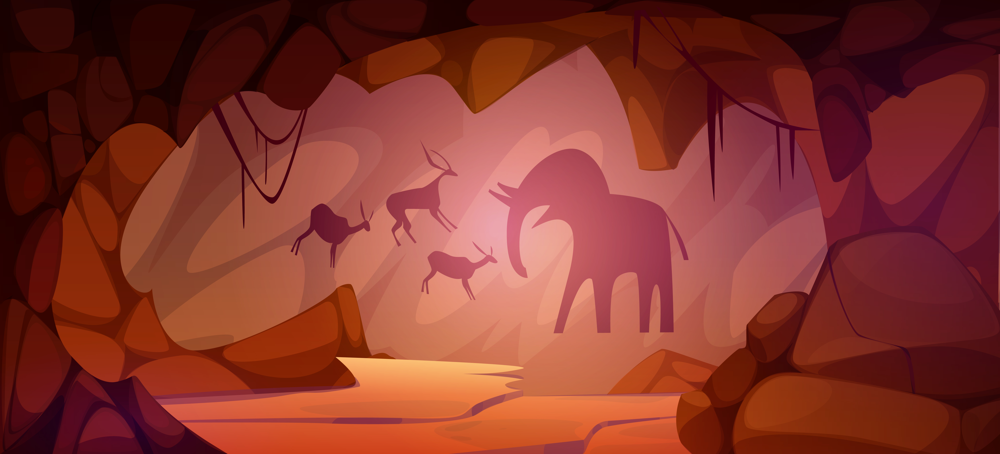
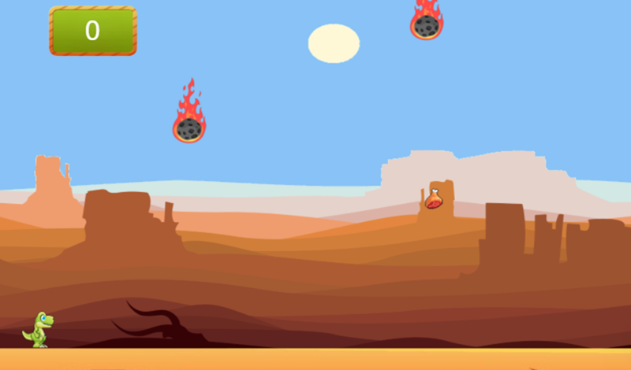
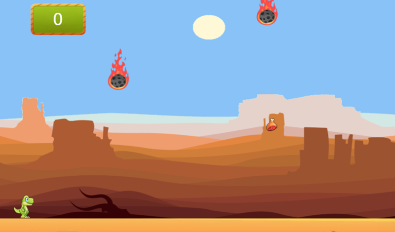

Prepare-se para uma aventura pré-histérica!
Em Jurassic Meteor Run, você controla um dinossauro em plena era dos dinossauros
— aquele tempo maravilhoso em que o maior problema era um meteoro caindo do céu...
Com uma mecânica simples, o objetivo é desviar das pedras espaciais assassinas (malditos meteoros!)
enquanto devora carninhas deliciosas pelo caminho.
Cada bife coletado vale pontos e mostra o quão bem seu dino se sairia numa versão alternativa da história onde, veja só, comida salva vidas!
Corra, coma, sobreviva e entre na disputa jurássica para ver quem é o dinossauro mais casca-grossa da pré-história!
 
